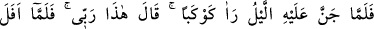
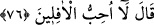

Âyette melekût âleminin bir şeyden yaratılmadığına dikkat çekilmiştir. Onun
dışındakiler ise bir şeyden yaratılmıştır. Allah Teâlâ, emir ile yarattığına “emr” (emir),
bir şeyden yarattığına “halk” (yaratma) adını vermiş ve şöyle buyurmuştur: “İyi bilin ki,
yaratma ve emir O’nundur.” (el-A’râf, 7/54)
Allah Teâlâ, İbrahim (a.s.)’a, eşyanın melekûtunu ve onlardaki Allah’ın birliğine
işaret eden alâmetleri göstermiştir. et-Te’vilâtü’n-necmiyye’den alınan açıklama burada
sona ermiştir.
Âlimler, gözle görülen varlıklara “mülk”, basîret ile idrâk edilenlere melekût adını
vermişlerdir. Melekût âleminin sırları, her müşkili akılla çözeceğine inananlara
açılmaz. Melekûtun sırları, ancak kalp ehline açılır. Çünkü, keşfin aksine akıl yoluyla
ancak eksik bir idrak hâsıl olur. Mükâşefe ise ancak mücâhede ehline hâsıl olur. Çünkü
mükâşefe, mücâhedenin neticesidir. O ise ulaşılması cidden nâdir olan şeylerdendir.
Allahım bizi sadece kulaklarıyla duyanlardan değil görenlerden kıl!
“Ki kesin inananlardan olsun.” Yani, zikredilen eşsiz varlıklardan ona ne
göstermişsek başka bir şey için değil, sadece ilimde yakîn derecesinde ileri gitsin,
Allah’ı tanıma (mârifetullah) da “ayne’l- yakîn” derecesine fazlasıyla ulaşsın diye
yaptık. Bu çok uzak gayeye ulaşmak, Allah’ın göstermesine bağlı bir kemaldir, ama
kemalin bizzat kendisi değildir. İbrahîm (a.s.)’a göklerin ve yerin melekûtunun
gösterilmesinin faydasının “kesin inananlardan olsun diye” şeklinde ifade edilmesi,
onun faydasının sadece bu olduğunu beyan etmek için değildir. Nasıl böyle olabilir ki?!
İnsanların irşad edilmesi ve müşriklerin susturulması da faydalarından bazılarıdır.
Bilakis bu, onun esas fayda, diğerlerinin de onun peşinden gelen faydalar olduğunu
beyandır.
76. Gecenin karanlığı onu kaplayınca bir yıldız gördü, Rabbim budur, dedi. Yıldız
batınca, batanları sevmem, dedi.
“Üzerine gece basınca” yani gecenin karanlığı ortalığı kaplayınca İbrahim (a.s.) “bir
yıldız gördü.” Çünkü yıldızın görünmesi, ancak güneşin ışığının tamamen gözden
kaybolmasıyle mümkündür. Şu açıktır ki, âyette bahsedilen yıldızın görülmesi,
kesinlikle güneşin doğmasına yakın bir vakitte olmamıştır. Aksine bu güneş tamamen
batıp ışığı kaybolduktan sonra olmuştur. Doğrusu güneşin battığı vakte yakın bir
zamanda olmuştur.
İbrahim (a.s.)’ın gördüğü yıldızın Zühre (Venüs) ya da Müşteri (Jüpiter) olduğu
söylenir ki bunların ikisi de yedi gezegene dahildir.
“Rabbim budur.” dedi. Burada sanki şöyle denilmektedir: “Yıldızı görünce İbrahim